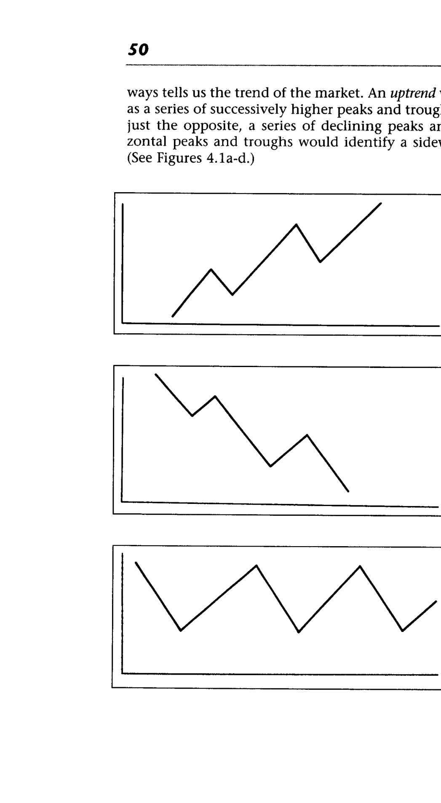
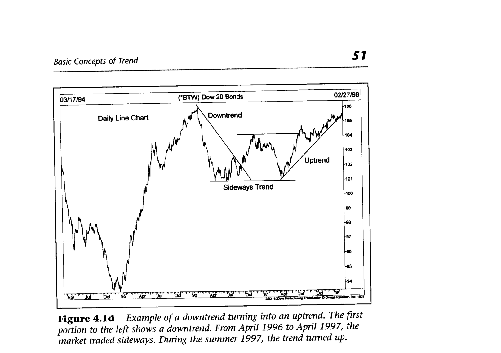
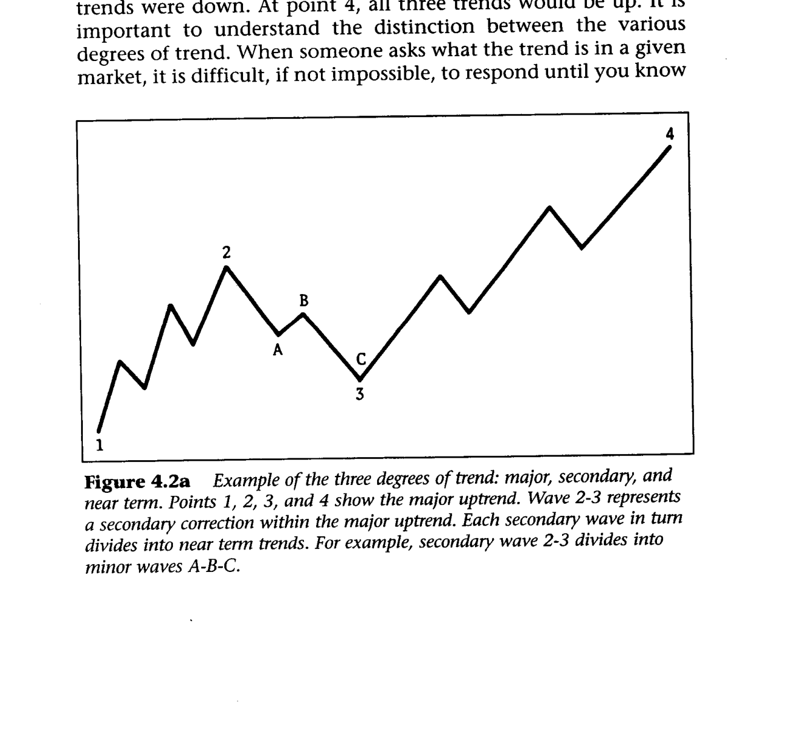
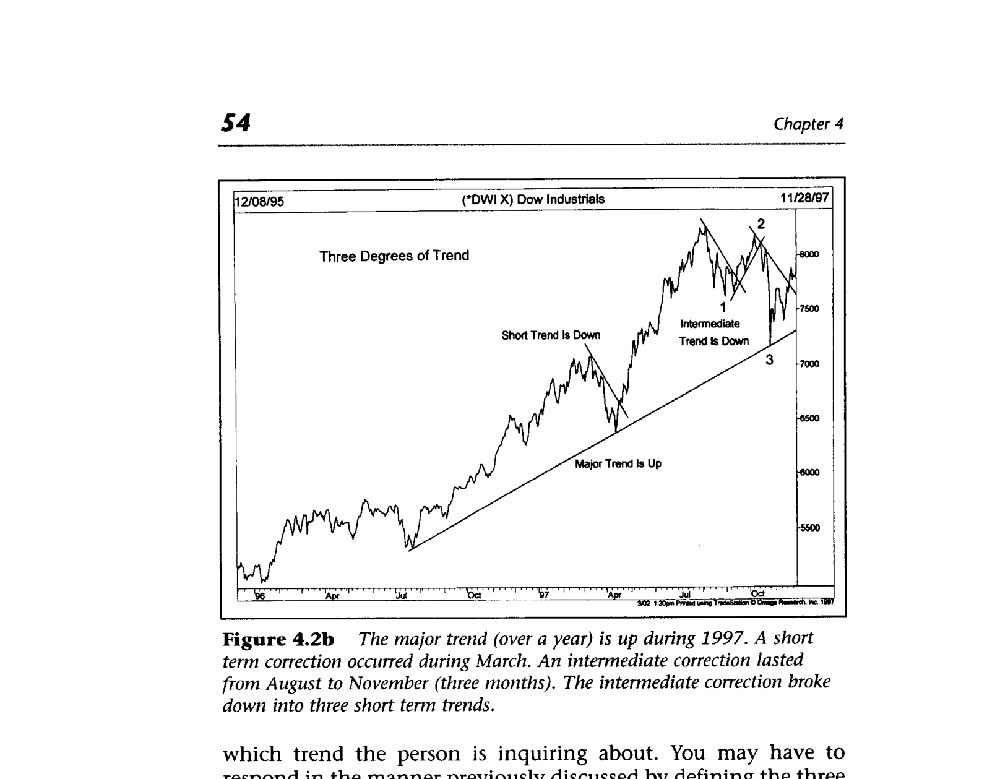
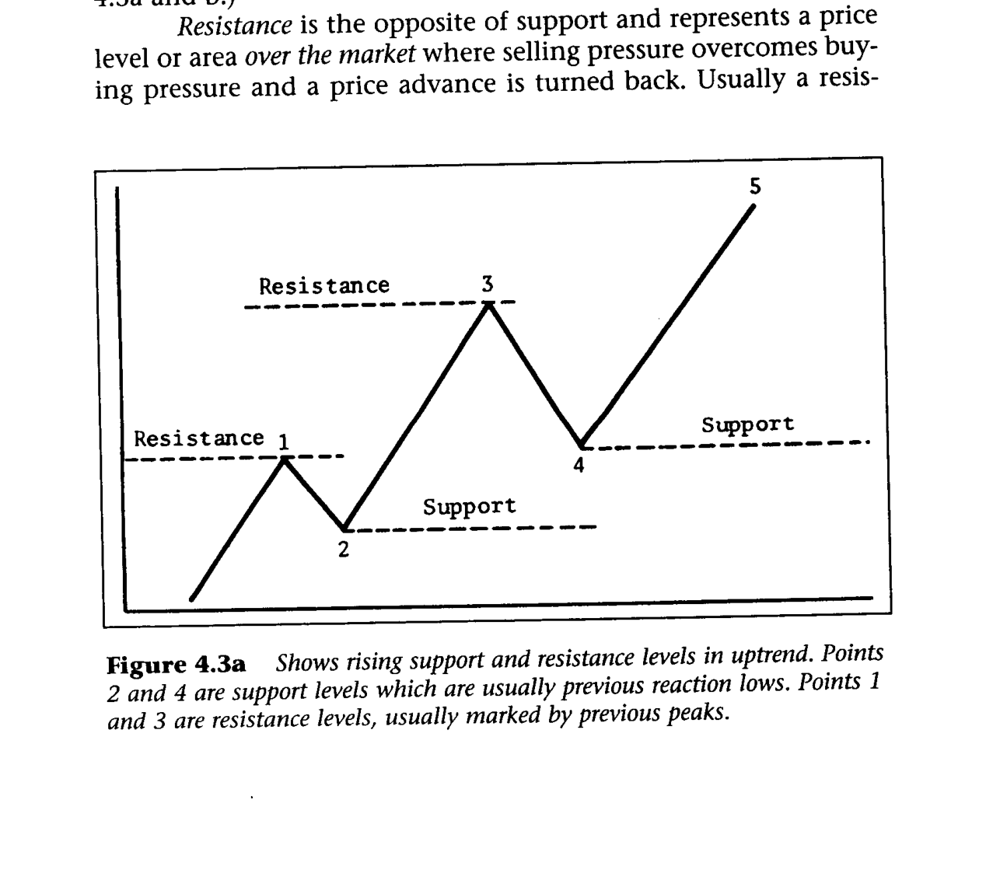
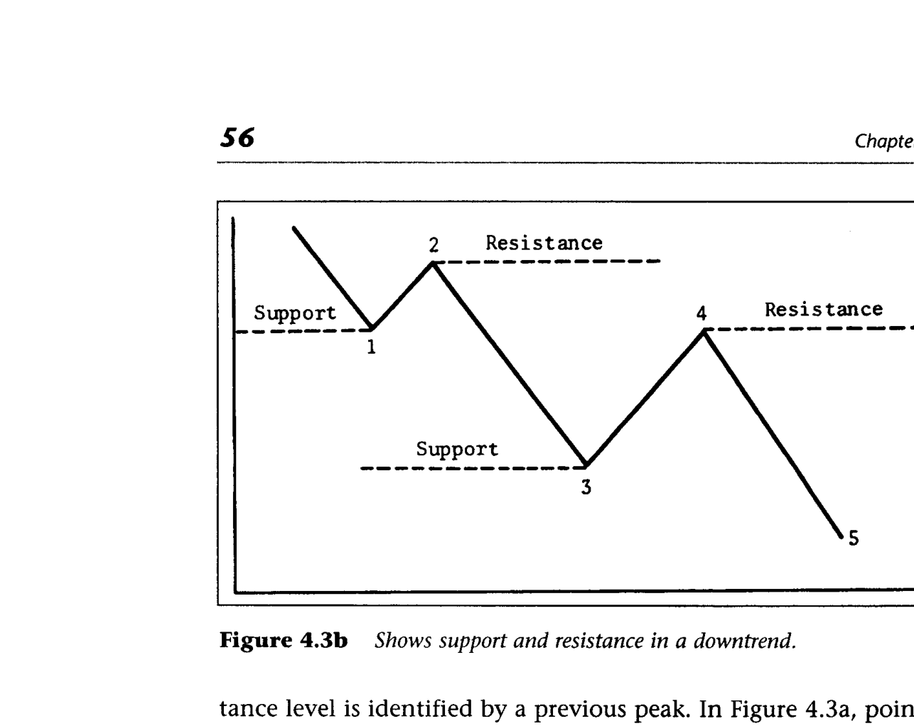
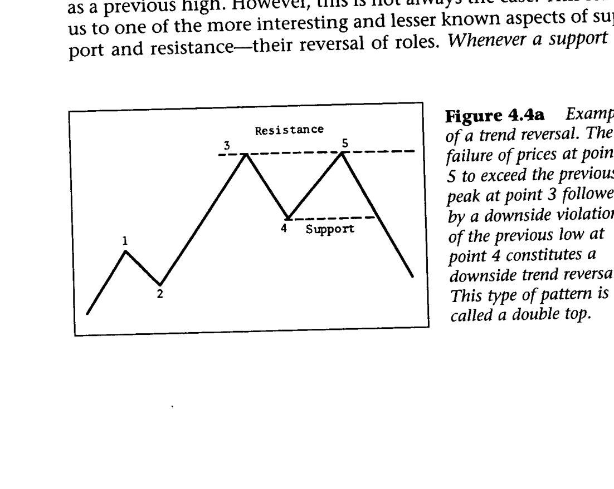
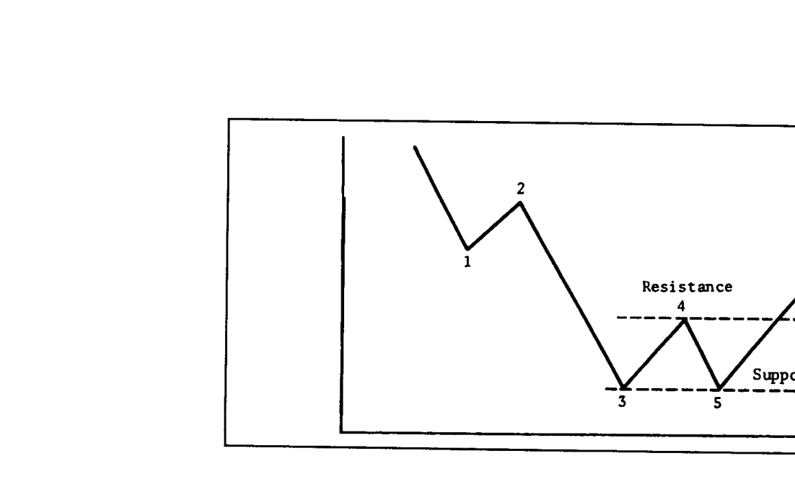
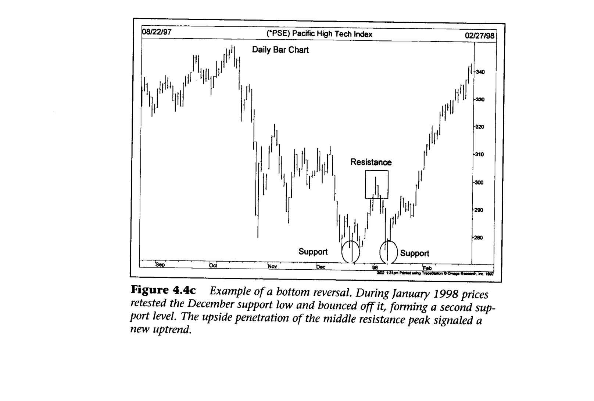

Every tool the chartist uses — support/resistance, price patterns, moving averages, trendlines — exists to measure the trend so you can trade with it. Markets don't move in straight lines; they zigzag in waves of peaks and troughs. It is the direction of those peaks and troughs that constitutes market trend. Uptrend = higher peaks and troughs. Downtrend = lower peaks and troughs. Sideways = horizontal peaks and troughs (trading range).


Markets move up, down, and sideways — not just up or down. Sideways action (trading range) accounts for at least a third of all price movement. Most technical systems are trend-following and work poorly in flat markets. The three trader decisions are: buy, sell, or do nothing. When the market is sideways, standing aside is usually the wisest choice.
Major trend: over six months (Dow says over a year). Intermediate (secondary): three weeks to several months. Near term: less than two to three weeks. Each trend nests inside the next larger one — the intermediate is a correction within the major, and itself consists of near-term waves.


Different traders see different trends. A position trader's "noise" is a day trader's "major trend." When someone asks "what's the trend?" — you need to know which timeframe they mean. Most trend-following approaches target the intermediate trend; near-term pullbacks within it are used for entry timing.
Support = a price level where buying is strong enough to halt a decline (previous reaction lows). Resistance = a price level where selling halts an advance (previous peaks). In an uptrend, support and resistance levels rise together. In a downtrend, they fall together.


For an uptrend to continue, each successive support must be higher than the last and each resistance must be higher than the last. If a dip reaches the previous low, the uptrend may be ending. If support is actually violated, a reversal from up to down is likely. Each test of a resistance peak is a critical moment — failure to break through is the first warning of trouble.
A double top: prices fail to exceed the previous peak (point 5 < point 3), then break below the previous support (point 4). A double bottom: prices hold above the previous low, then break above the intervening resistance. All reversal patterns boil down to the same logic — the expected higher high or higher low doesn't materialize.



When a support or resistance level is penetrated by a significant amount, it switches roles. Broken resistance becomes support; broken support becomes resistance. This is why old resistance often acts as a floor on pullbacks after a breakout.
Four groups create support: longs wanting to add, shorts wanting to exit at breakeven, sidelined traders wanting to buy the dip, and premature sellers wanting back in. All four converge at the same price with the same motive — buy. The more trading that occurred at a level, the more participants have skin in the game there, and the stronger the support or resistance becomes.